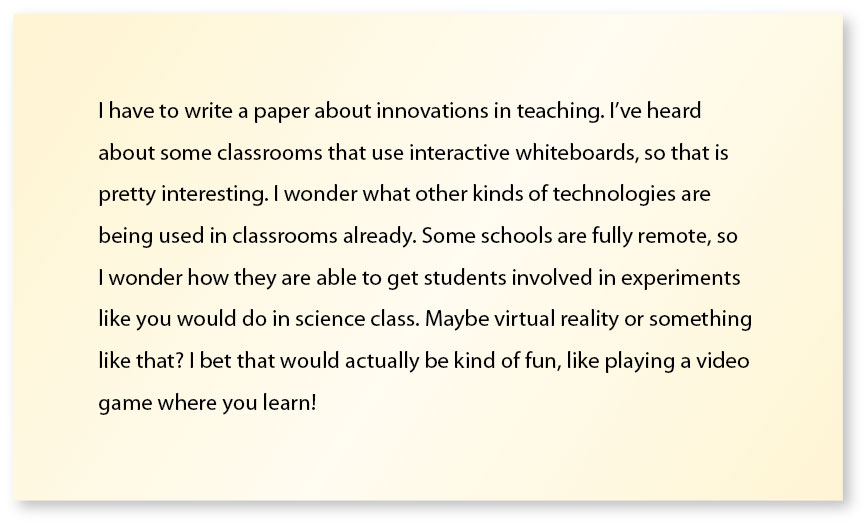
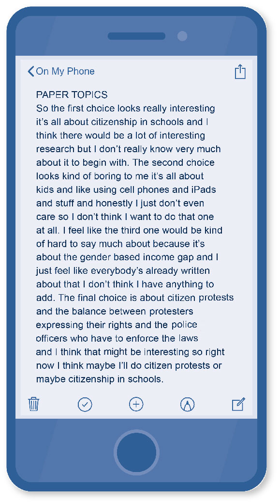
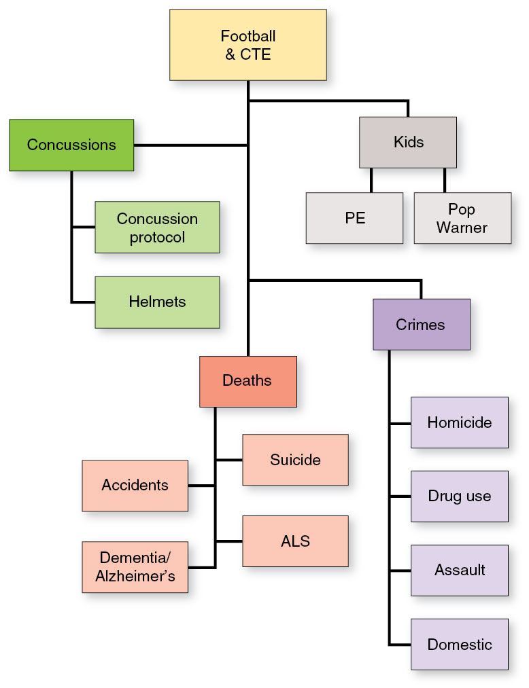

Strategies like planning ahead, reflecting on your progress and understanding, and, when necessary, adjusting your thinking and behavior will help you stay on top of your learning and coursework.
Academic reading requires active and in-depth engagement; using a reading strategy can help you make sense of what you read and assist you in organizing your thoughts.
Taking well-written notes can help you organize your thoughts, enhance your memory, and more effectively participate in class discussions.
CHAPTER SEVEN
Learning and Coursework Strategies
fizkes/iStock/Getty Images Plus
Learning Outcomes
After reading this chapter, you should be able to:
Discuss the roles of reflection and self-regulation in the learning process.
Define metacognition and identify ways you can engage in metacognition as you learn.
Explain what being prepared to learn entails.
Develop a strategic approach to completing your coursework.
Although some students seem not to need to study or think too much about the learning process in high school, they may realize their typical approach to learning and completing their coursework doesn’t always work as well when they get to college. Sound familiar? Maybe you find that, for many classes, you need to read paragraphs and textbook passages more than once for comprehension. Maybe you need to adjust your note-taking to be more involved in response to subject material that is more complicated or practice brainstorming to solve problems that are more complex than you’d previously encountered. College isn’t high school, as most students realize shortly after enrolling in a higher education program. Some old study habits and coursework strategies may serve as a good foundation, but others may need major modification.
The better you are at studying and completing coursework, the better results you’ll see in the form of high grades and long-term learning and knowledge acquisition. And the more experience you have applying successful learning and coursework strategies, the better you’ll get at them. But you have to keep it up—maintaining these skills and learning better strategies as the content you study becomes increasingly complex is crucial to your success.
Reflecting on your study habits and making adjustments based on those reflections will help keep you from falling into bad habits and instead move you forward along your path toward academic success. In this chapter, we’ll look more closely at the role reflection and self-regulation play in learning. We’ll also explore metacognition, the practice of thinking about your thinking, as well as ways to enhance your thinking skills.
7.1Reflection and Self-Regulation
Reflection is a mental process in which one thinks seriously about information or actions in order to understand them better. Students who consistently practice reflection while studying are able to pause and think through confusing content they may need to review again for full comprehension. You can also reflect on what others do to succeed at the goal you have set for yourself. That may include consulting students who have already taken the courses you’re in, talking to professors about their study habits, or even reading biographies of famous people so you can reflect on their approaches to success.
Self-regulation is the ability to manage one’s own emotions, thoughts, and behaviors. When you self-regulate, you engage in behaviors such as planning, monitoring, and self-reflection in order to achieve positive outcomes. When it comes to academic pursuits, students need to practice self-regulation to ensure they are managing their mindset and emotions, especially when dealing with busy schedules and deadlines. Part of this can be done by planning ahead to ensure you are taking the right classes, reading the correct material, and studying frequently enough to be prepared for assignments and quizzes. As you progress through your courses, you should monitor how well your plans are working and reflect on your own behaviors and emotions to assess whether any changes are needed. Without self-regulation, some students do not plan ahead, which can lead to negative behaviors like procrastinating, ignoring deadlines, and forgetting about critical assignments. This can further lead to experiencing stress and developing a negative mindset about one’s own ability to succeed. Taking the time to practice self-regulation can help you avoid these negative outcomes and better prepare you to weather stressful or difficult situations should they arise.
The Power of Asking “How Am I Doing?”
Mohamad Faizal Bin Ramli/iStock/Getty Images Plus
Check in with yourself about how school is going. If you’re struggling in one area, consider making changes to your routine.
Friends often ask each other, “How are you?” It’s a nice gesture in passing and can be a way to check in and make sure everything is going okay in general terms. When you are a college student, you have so many things going on at once. You have to attend classes, study, read, take tests, and think! And that’s just for school—you likely have a list just as long or longer for your personal and work areas. Consistently taking a few minutes out of your hectic schedule to check on yourself can be a very beneficial practice. You may have specific schedules drawn out for every aspect of your life, or you might be less structured in how you organize your day or week to get it all done, but whether you know it or not, you have some sort of system. And when something occurs that jostles one element of that system, you have to adjust in other areas. Think about the week of a major course exam; the extra time you may spend studying for the exam probably cuts into your social life. Or if you are celebrating your sister’s wedding, you may need to shift some of the time you would spend studying to be able to prioritize an important family and social event.
Effective students add in time for regular personal check-ins. This means pausing to ask yourself if everything is okay. This might include checking grades for each class, looking ahead to future assignments or deadlines to coordinate work schedules, or planning study sessions around a significant personal event. A check-in can be a way to analyze current strategies to determine whether they are still working as well as you want them to. You may need to adjust your reading schedule if you realize you always fall asleep reading and don’t finish when you read late at night. Maybe you can switch that reading time to early morning when you currently practice yoga and do your yoga at night instead. This give and take of your current schedule is all a part of managing your life while you’re in college.
Making Necessary Adjustments
We all have habits and routines, and some are better than others in our pursuit of higher education. Making adjustments in the way you study, read, practice, and write may be difficult at first, but those adjustments may be the difference between succeeding and failing at your goals or between succeeding at a high level and simply getting by.
In addition to conducting personal check-ins to reflect on your progress, you can also tap into other resources to see when you might want to adjust your practices. For example, assignments and assessments are two ways your instructors monitor your progress in your courses. If you participate in all the class discussions, lessons, and presentations, as well as read the assigned texts and study your notes, you will be able to show your understanding of the covered material through these assignments and assessments. If you do well, you will receive a higher grade than you would if you do not understand the material. You can use a grade as a way to assess the need to adjust. If you expected a higher grade than you received on an assignment or test, you may need to look at how you prepared for that task and talk to your professor for guidance. Faculty feedback is a very powerful resource you should ask for and pay attention to. Perhaps your professor can provide you with additional exercises to perform before the next exam or more resources to help you grasp difficult concepts.
Once you determine that you need to make some adjustments to your current approach to the course, figure out exactly what you are going to change and make a plan. Do you need to talk to your boss about working fewer hours during the week so you can focus more effectively on your assignments? Can you shift your schedule so you have more time to read and review your textbooks? You may have to make the difficult decision to give up a favorite activity such as watching television with your family or playing a game with friends so you can focus more of your time and energy on your courses. You don’t have to give up everything, and the sacrifices you make to devote more time to your college courses won’t be permanent. With honest reflection and self-regulation, you will be able to make adjustments to help you succeed.
7.2Metacognition
The practice of thinking about how you think is called metacognition. Students use metacognition when they practice self-awareness and self-assessment. Similarly, when you practice reflection and self-regulation, you are essentially practicing metacognition. You are the best judge of how well you know a topic or a skill. In college especially, thinking about your thinking is crucial so you know what you don’t know and how to change that, like deciding what you need to study, how you need to organize your calendar, and so on.
For example, you may be reading a difficult passage in a textbook on chemistry and recognize that you are not fully understanding the meaning of the section you just read or its connection to the rest of the chapter. If you stop and recognize this challenge with the aim of improving your comprehension, you are practicing metacognition. You may decide to highlight difficult terms to look up, write a summary of each paragraph in as few sentences as you can, or join a peer study group to work on your comprehension. If you know you retain material better if you hear it, you may read out loud or watch video tutorials covering the material. These are all examples of thinking about how you think and adapting your behavior based on this metacognition. Likewise, if you periodically assess your progress toward a goal, such as when you check your grades every so often during a course so you know how well you are doing, this too is metacognition.
Beyond just being a good idea, considering and analyzing your own thinking process allows you to reap great benefits because you are becoming more aware of and deliberating on your thoughts. If you know how you react in a specific thinking or learning situation, you have a better chance of improving how well you think or changing your thoughts altogether by tuning in to your reaction and your thinking. You can plan how to move forward because you recognize that the way you think about a task or idea makes a difference in what you do with that thought.
Becoming Aware of Your Thinking
Just as elite athletes watch game footage and work with coaches to improve specific aspects of their athletic performance, students can improve their mindset and performance as critical thinkers by starting to be aware of what they think. If a baseball pitcher recognizes that the curveball that once was so successful in producing strikeouts has not worked as well recently, the pitcher may break down every step of the physical movement required for the once successful pitch. The pitcher and their coaches may notice a slight difference that can be remedied during practice to improve the pitch.
Using Thought Deliberately
Developmental psychologist John Flavell, who coined the term “metacognition,” divided the theory into three processes: planning, tracking, and assessing your own understanding (Flavell, 1976). You can use the following strategies to engage in metacognition before, during, and after reading, completing assignments, and testing.
Planning
You can plan and get ready to learn by asking questions such as the following.
What am I supposed to learn in this situation?
What do I already know that might help me learn this new information?
How should I start in order to get the most out of this situation?
What should I be looking for and anticipating as I read or study or listen?
As part of this planning stage, you may want to jot down the answers to some of the questions you considered while preparing to study. If the task is a writing assignment, prewriting is particularly helpful just to get your ideas down on paper. You may want to start an outline of ideas you think you may encounter in the upcoming session; it probably won’t be complete until you learn more, but it can be a place to start.
Tracking
You can keep up with your learning or track your progress by asking yourself the following questions.
How am I doing so far?
What information is important in each section?
Should I slow down my pace to understand the difficult parts more fully?
What information should I review now or mark for later review?
What am I not understanding at all?
What am I thinking as I read?
In this part of metacognition, you may want to step away from a reading selection and write a summary paragraph on what the passage was about without looking at the text. Another way to track your learning progress is to review lecture or lab notes within a few hours of the initial note-taking session. This allows you to have a fresh memory of the information and fill in gaps you may need to research more fully.
Assessing
You can assess your learning by asking yourself the following questions.
How well do I understand this material?
What else can I do to understand the information better?
Is there any element of the task I don’t get yet?
What do I need to do now to understand the information more fully?
How can I adjust how I study (or read or listen or perform) to get better results moving forward?
Looking back at how you did on assignments, tests, and reading selections isn’t just a means to getting a better grade the next time (though that can certainly be a benefit of this sort of reflection). Reviewing these assessments of your learning will help you better identify the areas you need to work on. If, for example, you rework the math problems you missed on a quiz and figure out what went wrong the first time, you will understand that mathematical concept better than if you ignore the opportunity to learn from your errors. Learning is not a linear process; you will bring knowledge from other parts of your life and from your reading to understand something new in your academic or personal learning throughout your life. Using these planning, tracking, and assessing strategies will help you progress as a learner in all subjects.
7.3Preparing to Learn
Learning is hard work, but you can still pick up some techniques to help you be a more effective learner. Two major and interrelated techniques involve avoiding distractions to the best of your ability and creating a learning environment that works to help you concentrate.
Avoiding Distractions
We have always had distractions. Video games, television shows, movies, music, friends, and even housecleaning can distract us from doing something else we need to do, like study for an exam. That may seem extreme, but sometimes vacuuming is the preferred activity to buckling down and working through calculus problems! Cell phones, tablets, and portable computers that literally bring a world of possibilities to us anywhere have brought distraction to an entirely new level. When was the last time you were with a large group of people when you didn’t see at least a few people on devices? That doesn’t mean technology is a bad thing; in fact, most students use these technologies to learn. You just need to manage your use of technology so it works for you instead of allowing it to distract you.
When you sit down to learn, your biggest challenge may be to block out all the competing noise. And letting go of that connection to your friends and the larger world, even for a short amount of time, can be difficult. Perhaps the least stressful way to allow yourself a distraction-free environment is to make the study session a specific amount of time: long enough to get a significant amount accomplished but short enough to hold your attention.
You can increase that attention time with practice and focus. Pretend it is a professional appointment or meeting during which you cannot check email or texts or otherwise engage with your portable devices. We have all become very attached to the ability to check in—anonymously on social media or with family and friends via text, chat, and calls. If you set a specific amount of time to study without interruptions, you can convince your wandering mind that you will soon be able to return to your link to the outside world. Start small and set an alarm—a 30-minute period to review notes, then a brief break, then another 45-minute session to do some writing, and so on.
When you prepare for your optimal learning or coursework session, consider the following tips and do what is most effective for you.
Put your phone out of sight—in another room or at least someplace where you will not see or hear it vibrate or ring. Just flipping it over is not enough.
Turn off the television or music (unless listening to music helps you study).
Unless you are deliberately working with a study group, study somewhere alone if possible or at least away from others enough so that you don’t hear them talking.
If you live with other people or don’t have access to much privacy, see if you can negotiate some space alone to study. Ask others to leave one part of the house or an area in one room as a quiet zone during certain hours. Ask politely for a specific block of time; most people will respect your educational goals and be willing to accommodate you. If you’re trying to work out quiet zones with small children in the house, the bathtub with a pillow can make a fine study oasis.
Learning Environment
Sometimes you may need to study whenever and wherever you can manage—in the car waiting for someone, on the bus, at the Little League field as you cheer on your shortstop. And that’s okay if this is the exception. For long-term success in studying, though, you need a better learning setting that will help you get the most out of your limited study time. Whatever your space limitations, carve out a place that you can dedicate to reading, writing, note-taking, and reviewing. This doesn’t need to be elaborate and expensive—all you truly need is a flat surface large enough to hold either your computer or writing paper, book or notes, pens/pencils/markers, and subject-specific materials you may need (e.g., stand-alone calculators, drawing tools, and notepads).
Your space should be cool or warm enough for you to be comfortable as you study. You may have to try out numerous places to determine what works best for you. Wherever you study, try to make it a welcoming place you want to be in—not an uncomfortable environment that makes you want to just do the minimum you must complete and leave.
Debunking Learning Myths
The following are some common myths about learning and studying. Some of these myths have large fan bases! How many of these myths have you believed in the past? Once you read these explanations, you may understand why some of your study sessions are not as effective as you had hoped. That’s okay; just check in with yourself and make some minor adjustments.
Myth #1: You can multitask while learning.
How many times do you eat in the car? Watch TV while you write out a grocery list? Listen to music while you cook dinner? What about type an email while you’re on the phone with someone else and jotting down notes about the call? The common term for this attempt to do more than one thing at a time is “multitasking,” and almost everyone does it at some point. On some days, you simply cannot accomplish all that you want to get done, so you double up. The problem is, multitasking doesn’t really work. Of course, it exists, and we do it. For instance, we walk and chew gum or drive and talk, but we are not really thinking about two or more distinct things or doing multiple processes simultaneously. What your brain is actually doing is rapidly shifting between one focus and the other. Imagine you are (a) talking on the phone,
(b) driving, and (c) listening to your GPS direct you to a new location. You may be able to do all of these three things until a deer runs in front of your car or your GPS tells you to turn around. Now you are more intently focused on your driving than before. You may need to ask the person on the phone to repeat something because you didn’t hear the part of the conversation that happened right when you shifted your attention back to the road.
Myth #2: Highlighting main points of a text is useful.
Rawpixel/iStock/Getty Images Plus
Highlighting is a good first step in your study practice, but it shouldn’t be the only step.
Another myth that seems to have a firm hold is the idea that highlighting text—in and of itself—is the best way to review study material. While you can get some benefit from it, don’t trick yourself into spending too much time on this surface activity and considering your study session complete. Annotating texts or notes is a first-step type of study practice. If you allow it to take up all your time, you may think you are fully prepared for an exam or understand the concept well enough to write about it because you put in the time. You should actually spend more time reviewing and retrieving your lessons and ideas from the text or class discussion as well as quizzing yourself to accomplish your goal of learning so you can perform well. Highlighting is a task you can do rather easily, and it makes you feel good because you are actively engaging with your text, but true learning requires more steps.
Myth #3: Learning effectively is effortless.
With few exceptions, nothing is effortless or easy about studying. This is why some students don’t devote the time necessary to learn complex material: it takes time, effort, and sometimes a little drudgery. This isn’t to say that the outcome, learning (and maybe getting an A), is not pleasant and rewarding. It’s just that when done right, learning takes focus, deliberate strategies, and time. People who say otherwise are usually fooling themselves or not challenging themselves to go beyond what they already know. Think about a superstar athlete who puts in countless hours of drills and conditioning so they make their work on the field look easy. They may not always feel like getting up early to work out, just as you may not always thrill at the prospect of analyzing a complex theory, but if you want to be a successful student, you’ll have to push yourself and put in the effort. If you can also enjoy the studying, skill development, and knowledge-building aspects of learning, then you will most likely be more motivated to do the hard work.
7.4Coursework Strategies
To help you with your college coursework, you may be able to use some of the strategies you likely learned in high school, including brainstorming and outlining. But you may also need to learn new ways to organize your thoughts to help you understand complex issues. Some learning strategies work better for certain courses than others, so you need many variations at your disposal. Technology introduces innovative approaches students can use to study and learn; just make sure you aren’t adopting a new app or software that is more complicated than it is worth. The best tools and methods are the ones you will use consistently.
Understanding the Task at Hand
Coursework can incorporate a variety of topics and tasks and typically requires you to develop skills that pertain to critical thinking, information literacy, reading comprehension, logic and reason, collaboration, and more. Given that this process has so many factors and components, it is good practice to spend time understanding and planning for your assignments; doing so can help you be productive and successful. Every assignment will have its own purpose, and your success often depends on how well you understand that purpose. If a writing assignment calls for you to demonstrate your ability to analyze a reading’s argument but you turn in a paper that simply summarizes that argument, you likely will not be successful.
Every assignment comes with instructions. Begin your efforts by reviewing the assignment and instructions. Pay close attention to the assignment’s action words and specific requirements, and make sure you understand what you are being asked to do. Speak up if you are confused or have questions, and remember to also review your assignment’s grading rubric.
It can be helpful to use an expectation chart to get started (see Table 7.1). This chart can help you identify an assignment’s specific expectations. Read the assignment’s instructions and identify each expectation. (Contact your instructor if you cannot locate all of the information you need.) The chart can be used to analyze all kinds of assignments; use it to stay on track throughout the entire assignment process.
Table 7.1: Expectation chart: Discussion post
Type of assignment
Discussion post
Length requirement
At least 250 words
Style guide
APA 7th edition
Source requirement
At least one scholarly study
Due date
June 22, 2021
Brainstorming
Brainstorming is the act of generating ideas and considering ways to approach a topic. There are dozens of techniques for brainstorming, and some people have methods they prefer over others. Those new to this technique should experiment with different forms of brainstorming until they find a method that works best for them. If you have trouble getting started with an assignment, try a new brainstorming technique and see what happens!
The List Maker
Lola is a list maker. She knows she would like to write about skateboarding culture for a writing assignment, but she doesn’t know where to begin. She grabs a pen and a piece of paper and sits quietly, focusing her mind on skateboarding. At this point, she does not worry about spelling, organization, or meaning. She simply sits and makes a list of her ideas (see Figure 7.1).
Lola’s brainstorming session lasts about 5 minutes. When she’s finished, her list is filled with topics from helmets to music to legal issues to fashion. With all of these ideas together in one place, Lola can cross out any topics that seem uninteresting, inappropriate, or otherwise unsuitable for the assignment. Then she can consider the rest of her options, look for any patterns, and arrive at a narrowed topic for her paper.
Figure 7.1 Brainstorming by list making
A good way to brainstorm topic ideas is to make a handwritten list. You can circle, cross out, and highlight ideas without worrying about organization or grammar.
The Freewriter
Charlie is a writer who likes to focus on one task at a time. With 10 minutes of free time before work, Charlie freewrites on an upcoming assignment topic. He sits at a laptop and just writes about the topic for 10 minutes straight without worrying about spelling, grammar, or structure. He can add anything he wants about a specific topic in general terms (see Figure 7.2).
With a clear mind after work, Charlie looks at the freewrite and finds some ideas that are interesting and appropriate for the assignment. Those ideas give him a starting point for the assignment, and the entire process didn’t take more than 15 minutes.
Figure 7.2 Brainstorming by freewriting
Freewriting is a good way to let ideas about a topic flow from your mind to the page. There are no rules or restrictions in freewriting, so your mind is able to work its way through the topic uninhibited.

The Talker
André is a talker. His mind works best when he is thinking out loud. His instructor has provided the class with a list of approved topics, but André is not sure which one to choose. Arriving home to an empty apartment after working a late shift, he grabs his smartphone and uses the talk-to-text feature to record his ideas. When he wakes up the next day, he takes a look at the transcribed note on his phone and makes a decision about what to write on (see Figure 7.3).
André’s talk-to-text brainstorming session only took a couple of minutes. He was able to talk aloud freely while his phone documented his thoughts so he could review them later. Even though André did not have anyone to talk to, technology enabled him to talk through his options and decide on the best topic for his work.
Figure 7.3 Brainstorming by thinking out loud
Another effective way to brainstorm topic ideas is to use a dictation app on your smartphone to take notes. You can talk freely about your thoughts while the phone documents your ideas.

The Mind Mapper
Lashonda likes charts and visual organizational tools, especially for brainstorming. Therefore, she starts every writing assignment by using a mind-mapping program. Mind maps are graphic/visual organizing tools to help users see relationships between ideas. She begins with the assignment’s broad topic and then explores subtopics, ideas, examples, and facts that relate to it. When she is out of ideas, she stops and reviews her mind map (see Figure 7.4).
Sometimes Lashonda’s brainstorming sessions are quick. Other times, they occupy a bit more of her time. She keeps a copy of the mind map to help her develop her position and refute counterarguments later in the writing process.
Figure 7.4 Brainstorming with a mind map
Creating a mind map is a good way for visual learners to brainstorm topic and subtopic ideas. Start with a broad topic, then narrow it down to subtopics and examples.

The Googling Wikier
Mia needs to write about an historical era but doesn’t know where to begin. She starts with a Google search of “historical eras” and spends an hour clicking around and reviewing blogs, social media groups, web publications, and YouTube videos. She feels most drawn to the Roaring Twenties, so she checks Wikipedia. While she knows that Wikipedia is not a credible source for information in academic research, it does contain some good common knowledge that she can use to start thinking about her topic. References cited in Wikipedia articles also give her a place to begin her own research.
Mia’s brainstorming session took a bit of time, but it was entertaining and enjoyable. She gained good background knowledge on the subject and identified some important keywords while she brainstormed. Most importantly, her interest was piqued, and she is excited to learn more.
Receiving and Implementing Feedback
It can feel awkward to give or receive feedback. Sometimes we feel as though feedback on an assignment reflects someone else’s assumption or judgment about us. The truth, however, is that feedback is a set of observations about the work, not about who did it. If you walk out of a movie theater and think the lead actor didn’t quite measure up to your expectations in their role in this particular movie, that doesn’t mean you don’t like the actor personally or don’t appreciate their work in other roles. Once we understand that there is a difference between our work and ourselves, we will be in a better position to give and receive good feedback.
It’s important to take time to prepare for the feedback process, whether giving or receiving it. Educational expert Marilee Adams (2013) suggests using the ABCD choice process. This process is experienced through four steps: aware, breathe, calm, and decide.
The first step is to pause and become aware of your current state of mind. You may be feeling like a judge—or like you are being judged—rather than a learner. You may be slipping into a fixed mindset rather than adopting a growth mindset. Adams (2013) tells us to be aware of our state of mind so we can intentionally choose to approach the task as a learner with a growth mindset.
The second step is to breathe. A strong, mindful deep breath can reduce stress and clear your mind. Take deep breaths until you feel calm, centered, and prepared to learn.
Once you feel calm, you can open yourself up to curiosity. Curiosity requires you to be comfortable with the unknown and also prepared to ask questions.
After opening your mind and becoming curious, you will be prepared to decide. At this point, you are prepared to give good feedback and receive it from others.
Working With Tutors
Most colleges and universities offer tutoring services for free or at a very reduced price. Tutors are available for students of all skill levels in all stages of their learning process. To get the most out of a tutoring session, organize your materials and have an assignment’s instructions nearby. Also keep the grading rubric on hand so your tutor is aware of how your instructor will assess the assignment. Schedule tutoring as early in the assignment process as possible so you have time to reflect on the experience and use the information long before an assignment is due.
Remember to approach tutoring with an openness to learn and apply what you learn. The tutor will offer you guidance and suggestions but will not do the work for you. Don’t become frustrated if the tutor spends time teaching you to help yourself rather than fixing your problems. A tutor’s job is to provide you with one-on-one guidance and support so you can develop and improve your learning skills.
While collaborating with a tutor, listen carefully. Take notes and speak up should you have a question. A tutor may use an unfamiliar word or communicate differently from the way your instructor does. If you don’t understand a tutor’s comments, ask for clarification. If you have specific concerns the tutor has not addressed, bring them up. Tutors are a great resource for advice, clarification, and skill development, but they are not mind readers. The more communicative you are with your tutor, the better your experience will be.
Instructor Feedback
An instructor will provide feedback on assignments, which must be used to build your skills and improve your writing. Instructor feedback offers you the chance to receive a fresh perspective on your work and any other one-on-one instruction you may have received. It can be unnerving to turn your work over to an audience; however, your instructor’s goal is to help you by providing you with the audience’s perspective while giving you guidance, suggestions, and corrections.
Instructors would love to spend hours on each assignment, diving into the work and engaging with you on your plans for revision. However, they are responsible for helping every student in class and may not be able to provide as much in-depth attention and explanation as they would like. Therefore, instructors tend to prioritize the feedback they have for you, giving you only the information they think is most necessary.
Instructor comments are sometimes very brief. While this brevity can be just as helpful as lengthy feedback, some students may read these comments as harsh or abrupt. When an instructor leaves you a quick note on your marked-up paper, they assume you know what the comment means. If you are confused, ask for clarification! Request that the instructor provide an example or elaborate on what was meant in the short comment.
Peer Review
One of the best ways to move the revision process forward is to collaborate with your peers. Students are fortunate to have a classroom full of peers. Having another student peer review your work offers you a chance to solicit a reader’s responses and ideas. When you receive a peer review, focus on the collaborative process. Remember, you should be working with—not against—a reviewer to improve your writing.
Do not take criticism personally. Remember, your reviewer is analyzing your work and is not judging you.
Keep an eye out for differences in opinion or perspectives between you and your reviewer. If a reviewer tells you they are confused or if they contradict or disagree with you, other readers are likely to have the same reaction. Figure out why your reviewer was challenged and take time to correct the problem.
Prioritize the reviewer’s concerns. Your reviewer may provide you with a lot of suggestions and advice. Think about the biggest issues and decide which comments require your attention and which do not.
Take care with feedback that introduces contradictions or inaccuracies into your work. A peer reviewer may make mistakes or have inaccurate information. It is possible that a peer reviewer might give you a suggestion that contradicts information from class or otherwise is out of step with feedback you have received from your instructor. When in doubt, ask the reviewer or verify with the instructor.
Remember that as valuable as peer reviews can be, ultimately, you are the owner of the work. If you do not want to make any of the changes the reviewer suggested, you do not need to do so. Usually, however, you will find at least some value in seeing your work from the perspective of a different person.
Revising With Feedback
When revising with feedback, allow for plenty of time in between peer editing or instructor feedback and the next phase of revision and development. You will need time to process and integrate the feedback into your work. After all, revising is different from just making minor edits or correcting obvious typos or grammatical errors. In revision, you may need to rethink your main ideas, rearrange your evidence, or include new supporting details in response to feedback from others.
Also keep in mind that others will need enough time to read your work and provide you with helpful feedback. It is not fair to ask an instructor or peers to review your assignment the day before it is due and expect feedback in time to revise. Be sure to check with your instructor regarding the class’s policy on requesting feedback.
Chapter 7 Summary
Conclusion
Students work hard to master difficult concepts in their courses, and fortunately, the effort students put into applying learning and coursework strategies in one class will help them in later courses. One way to ensure your efforts pay off is to reflect on your learning and progress and then make necessary adjustments to your learning strategies based on those reflections. These adjustments, whether it’s to how long you spend reviewing your notes or to your learning environment, will help you be better prepared to learn.
Approaching your coursework strategically is key to completing it successfully. Making sure you understand the task you’re being asked to complete, taking notes and organizing your thoughts, and seeking help when it is needed are well worth the time and effort.
Similarly, receiving and reviewing feedback from your instructor or peers will prompt you to reflect on and even improve your own work. Think about the feedback you receive as a means of communication, not a form of personal criticism. Your professors and the other educational professionals you encounter in college want to help you succeed, not pull you down. Take advantage of the expert advice you receive to become a better student.